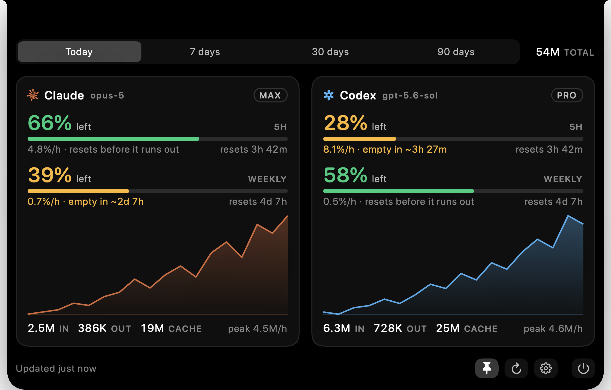

NotchCli
Check Codex CLI limits and Claude Code token activity at the top of your Mac. Keep reset times and usage in view while you work.
Download on the Mac App StoremacOS 14 or later · Apple silicon (M1 or later) · English interface
Works with or without a MacBook notch. Requires local Claude Code or Codex CLI logs.

See the next reset at a glance
Check Codex's remaining allowance and reset countdown. When enough readings are available, NotchCli estimates whether a limit will run out before it resets. Hover to open the panel, click to pin it, and move away to return to the compact readout.
Review activity from either CLI
Compare input, output, and cache tokens. View today's hourly activity or switch to 7, 30, and 90 days. You can use Claude Code, Codex CLI, or both.
Set up your log folders
- Use Claude Code or Codex CLI on this Mac, then open NotchCli.
- Open Settings from the panel. Choose the folder for each tool you use. In the folder picker, press Command-Shift-G and enter
~/.claudeor~/.codex. - Keep using your CLI. The panel refreshes as local logs change.
Using Claude quota: the App Store version needs a separate, up-to-date local snapshot to show Claude's remaining allowance. NotchCli does not create that snapshot. Read the setup and troubleshooting guide.
Your CLI data stays on your Mac
NotchCli requests read-only access to the folders you choose. Logs, paths, token counts, quota values, model names, credentials, and work content are not sent by NotchCli. Optional app analytics can be turned off in Settings. Read the privacy policy.
NotchCli is an independent utility, not an official Anthropic or OpenAI app.